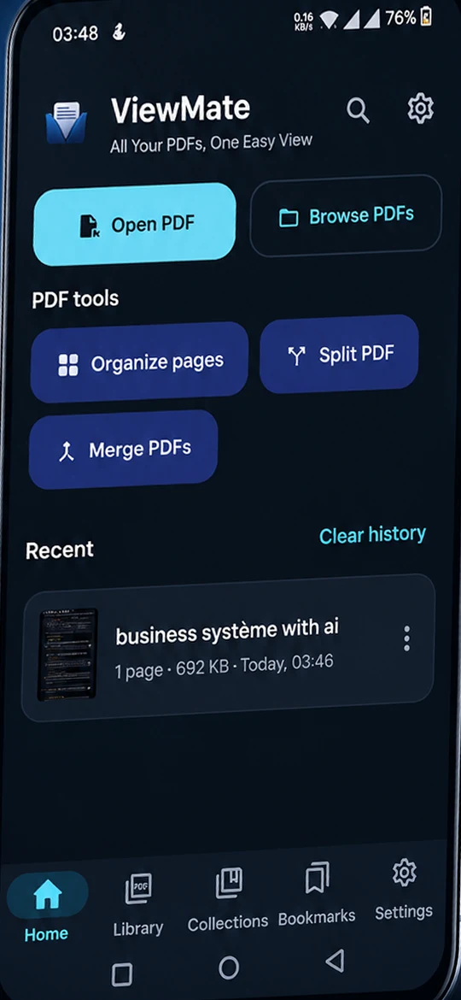
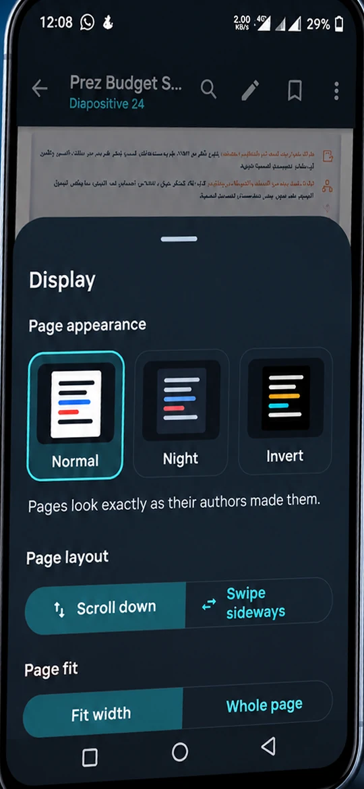
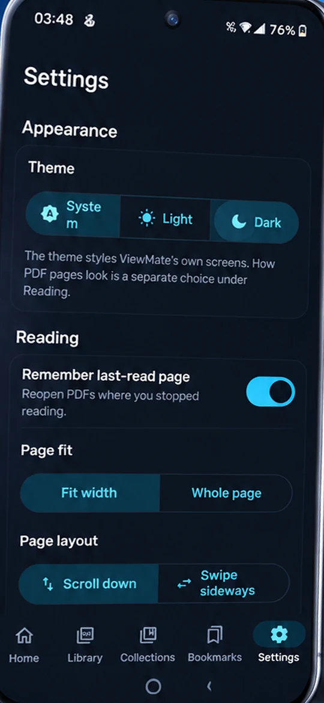

Read comfortably
- Continuous scroll or page by page
- Fit width or whole page, pinch to zoom
- Two pages side by side on tablets
- Night and inverted reading modes
- Table of contents, page scrubber, tabs
Offline PDF reader for Android
Read, search, mark up, fill, sign and organize PDFs. No account, no ads, and no internet permission, so your documents never leave your phone.
Version 2.0.0 · Android 7.0+ · by OligoLabs



Everything in one reader
Open a PDF and read. Reach for the tools only when the document asks for them.
A drawn signature is a picture of your handwriting, not a certified digital signature.
Private by design
ViewMate's manifest declares no INTERNET permission. That isn't a promise in a policy; it's how the app is built, and an automated test guards it.
Version 2.0.0 for Android 7.0 and newer. Installs directly from the APK.
Package com.oligolabs.viewmate
Tap the button and let your browser save the file.
Android will ask once to let your browser (or Files app) install apps. Approve it for this install.
Launch ViewMate and pick a file, or use "Open with" from any app.
Good to know
Yes. The app declares no INTERNET permission, so Android won't let it make network connections. Links inside a PDF open in your own browser.
No. Annotations, filled forms, signatures, merges, splits and page edits are saved as a new copy through Android's "Save as" screen.
It opens and displays them fine. ViewMate has no OCR, so scanned pages can't be searched or read aloud, and the app tells you when that's the case.
It's a picture of your handwriting placed on the page, not a certificate-based digital signature. Check what the recipient requires.
It only uses offline voices installed on your device. If you have none, install one in Android's text-to-speech settings and try again.
Android 7.0 (API 24) and newer. The "Scan this device" option isn't available on Android 10; there you can grant folders instead.